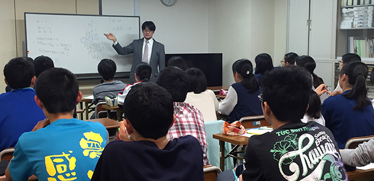

盟友が入院という…
連休中に相方の研究員である庄本氏が入院（汗）。
どうやら腸の病気ということで、結構長く療養が必要とのこと。
ん～、連休前半に塾の同僚の結婚披露宴に参加したときには大丈夫だったのになあ。
見舞いにも行ってきましたが、復帰は来週になりそうですね。
戻ってきたらバリバリ働いてもらいましょう！
さて、庄本氏不在で授業のコマ調整とかいろいろあって少し大変でしたが、こういうときこそガンガン攻めるのが私の信条。
ハードな日をさらにハードに攻めることにしました。
仕事のあとに朝までコースのリフレッシュ予定を立て、いざ週末。
５月９日（土）この日から新たに始まることがいくつかありまして。
まずは昼イチから小６の中高一貫校対策講座。
庄本氏のコマの代わりに私のコマを倍の時間やったので、数理的なトレーニングをぶっ通しで３時間やってきました。
小学生が元気すぎて、この時点ですでに私のライフゲージは約半分に。
そして終わってすぐに塾の本部で中３の最難関数学講座を実施。
これも今日が初回。
現時点で難関校受験を多かれ少なかれ視野に入れている中３生対象の特別講座です。

各教室から集まった志願者は３０名強。
現在進行形で教えている生徒もいれば、過去に教えた生徒もいます。
それにしてもなかなか皆意欲的！
思わず予定していた内容よりも２ステップぐらい上の内容まで踏み込んで講義してしまいました。
これが終わったのが20時半。
このあと、柏の教室で中２生の集会です。
この時期の中２はなかなか難しい時期で、中３生ほどさしせまった状況ではないし、中１生ほど中学生としての新鮮味もない。
どうしてもダラダラしてしまうんですね。
そんな状況を打破すべく、一足先にうちの所長管野が生徒たちを前に熱弁をふるっているはず…。
現場に到着すると…どういう経緯かわかりませんが、所長がホワイトボードにオバＱやらポパイやら自画像（なぜかイケメン風）を描いています。
まあ、まじめな話の中にわけのわからないパフォーマンスを随所に盛り込みながら人を引き込むのは所長の常とう手段ですから（笑）。
しかし生徒たちは笑いながらも真剣そのもの。
心理学を踏まえた所長の話が響いているな、と感じました。
最後に私もチョット話をさせてもらって終了。
夜はこれから
とりあえず今日の仕事はここまでなんですが…。
夜はここからが本番。
塾の本部の事務Ｉ女史と一緒に私のいきつけのマッサージ店へ。
前々からマッサージの話題は出ていたのですが、誘ってみたらぜひ行きたいということなので、予約を入れていたのです。
６０分コースで税込3200円。
高いか安いかはその人次第でしょうけれど、私のごっつく固い僧帽筋をほぐせるのはこの店しかありません。
店員さんも心得ていて、いつもフルパワーでやってくれます。
この日もがっつりやってもらいました。
Ｉ女史も満足してくれたようで良かった良かった。
この時点で22時半。
この日最後に待っているイベントはカラオケ。
とりあえず定食屋で腹ごしらえをして待ち合わせ場所へ。
メンバーはＨＰ支配人と広報部長のＡ女史。
朝５時までのフリータイムを選択。
しかし体力がもったのは３時ぐらいまで。
後半はヘロヘロになり、もう声も出ない。
最後はソファに寝ころびながら二人の熱唱を聴いていました（笑）。
まあなんだかんだ言ってアラフォーですからね。
徹夜はやっぱりこたえます。。。
そしてカラスが鳴く中、帰宅。
庄本氏、君の分まで攻めの週末を満喫しといたよ。
早く復帰してね！